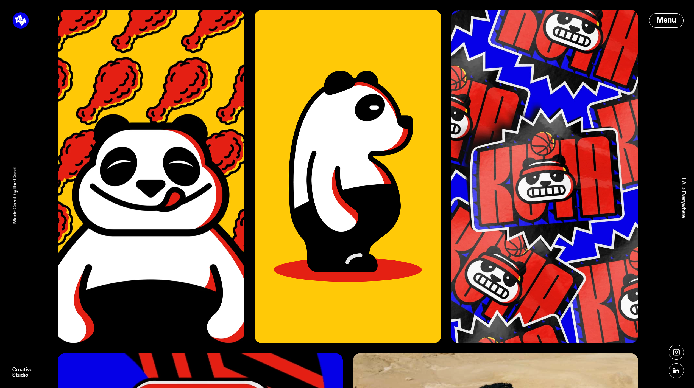
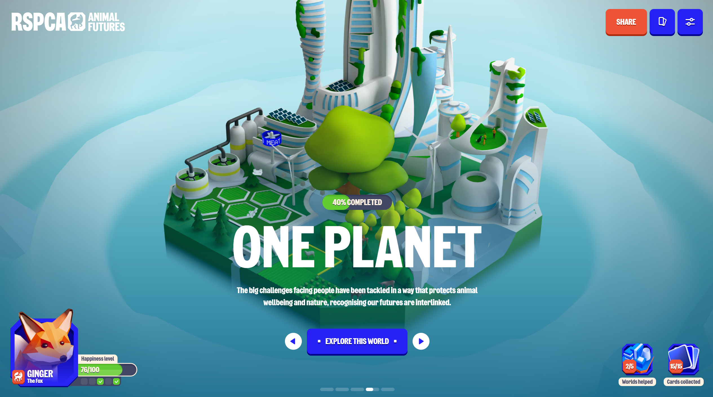

THE LINE

Analizando la página desde un punto de vista objetivo tiene un excelente diseño
con una buena distribución de las secciones y en general una estructura muy sólida,
con una interfaz intuitiva y muy visual de cara al consumidor. La landing page principal
es bejo mi criterio el punto fuerte de esta página ya que nos muestra animaciones del
propio estudio con mucha potencia visual a la vez que te lo cuentan desde el punto de vista
de su marca con ese rojo carmesí opaco que capta tu mirada durante bastante tiempo debido a
su enorme atractivo visual, este se va viendo a lo largo de la página y le da ese toque personal
que tanto la distingue. La forma de presentar los trabajos me parece simplemente perfecta, no es que
sea algo fuera de lo común pero el como estan organizados y como van pasando cada una de las animaciones
me parece simplemente espectacular. Como puntos negativos de diseño quizás diría que la barra
de navegación en ciertos puntos de la página se pierde mucho y no es del todo legible. Las animaciones
de la propia página al scrollear aunque no son malas ni mucho menos, creo que no están al nivel de las
mejores páginas que hay hoy en día, simplemente no me convence mucho que los apartados salgan como
en diagonal y aparte de eso tiene animaciones que tiene cualquier página hoy en día y poco más que
decir de esta gran página, donde el punto fuerte es claramente la potencia visual de la marca y la
perfecta estructuración del contenido y el como se muestra de cara al espectador.
KUYA

Esta página de este estudio de especializado en branding y publicidad llama la atención más entrar con
una animación de intro muy trabajada y que rápidamente te empapa de sus colores y la identidad visual
del estudio. En cuanto al contenido de la misma es una página simple sin muchos apartados, que puedes
encontrar de forma muy fácil arriba a la derecha en el botón de menú y que en general si en algo
destaca es que es extremadamente limpia y tiene un jerarquización de contenido perfecta con un uso de
los pesos de las tipografías dependiendo de la sección y el contenido que concuerdan perfectamente, la
forma de presentar cada trabajo es como si fuese una especie de portal de entrada donde cada uno te da
pie a abrir un universo visual distinto, cada uno de los trabajos queda presentado de forma impoluta con
animaciones muy buenas y un contenido excelente la forma de scrollear la página se siente muy limpia y otorga
una experiencia de navegación por la misma de lo más amena y satisfactoria posible, incluso las animaciones
de carga son espectaculares. En general es una página que hace un uso del color y de su propia marca impecable
y que de una forma sencilla logra que se vea algo súper sofisticado con una presentación extremadamente
limpia, simplemente creo que es una página perfecta en todos los sentidos, como apunte podría decir que los
apartados que salen en el menú al desplegarlo podría estar directamente tambíén en la homepage arriba a la
derecha debido a que hay un gran espacio en blanco y así facilitar un poco más el acceso rápido a ellos sin
necesidad de desplegar la animación del menú, pero fuera de ese pequeño apunte es simplemente una obra de arte.
Atom

Atom: es una página que rompe completamente el formato clásico de página web organizando todo con un sistema
de scroll progresivo donde los modelos 3d de la página van rotando y cambiando en función de la información con
un sistema de 5 fases con about en cada uno de ellos que crean un filtro animado por encima cada vez que pinchamos
en el que crea un efecto que ayuda a focalizar la atención en la información. Un elemento que llama la atención de
primera mano es los estilos utilizados en el puntero de navegación que crea un efecto de pincel que disuelve la
zona por la que se arrastra. En cuanto al diseño del about y los trabajos tienen un diseño muy limpio con una
organización clara y concisa de la información manteniendo esa esencia espacial que transmite la página. Como objeción
destacaría alomejor como en la anterior poner un poco más visible el about y los trabajos aunque en este caso no lo veo
tan necesario ya que lo veo como una experiencia más visual que busca ese primer impacto que vender su marca como tal.
Animal futures

Esto es algo completamente distinto a lo que se suele ver en páginas web ya que básicamente es una página de experiencia
interactiva que te cuenta una historia con un fin detrás que en este caso es concienciar a la gente del impacto de los
humanos en los animales y el medio ambiente. En cuanto a diseño es un trabajo espectacular con una dirección de arte muy
buena y unos modelados de muy alta calidad. Lo que más destaca de la página es que tiene un sistema de elección que te
deriva a diferentes variables dependiendo de lo que escojas lo que invita a volver a entrar para ver qué hubiese pasado.
Es una página muy compleja en cuanto a programación ya que es casi un juego directamente. Como cosas malas yo diría que al
final no se llega a entender muy bien cual es la finalidad de reunir todas las cartas ya que según vas recuperando mundos
vas obteniendo hasta un máximo de 15 cartas por lo que esperas que pase algo pero no se llega a entender el porqué de
coleccionarlas , pero por lo demás es una página muy completa con un sistema de elección de personaje que al parecer es
simplemente por estética y no porque hagan diferentes cosas lo que hubiese estado bien pero sería más un añadido que una
pega, los mundos están perfectamente diseñados con un progreso dentro de los mismos a medida que los vas restaurando y queda
muy claro el mensaje que la página quiere transmitir.